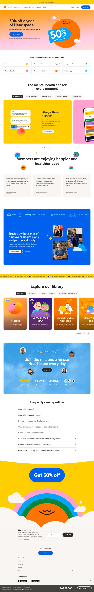
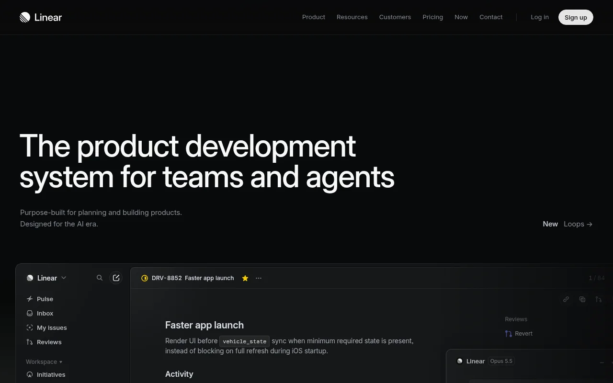
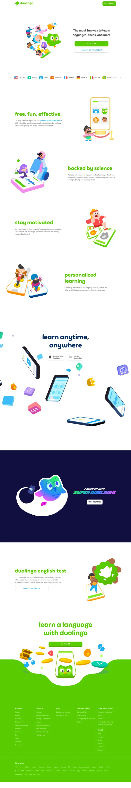
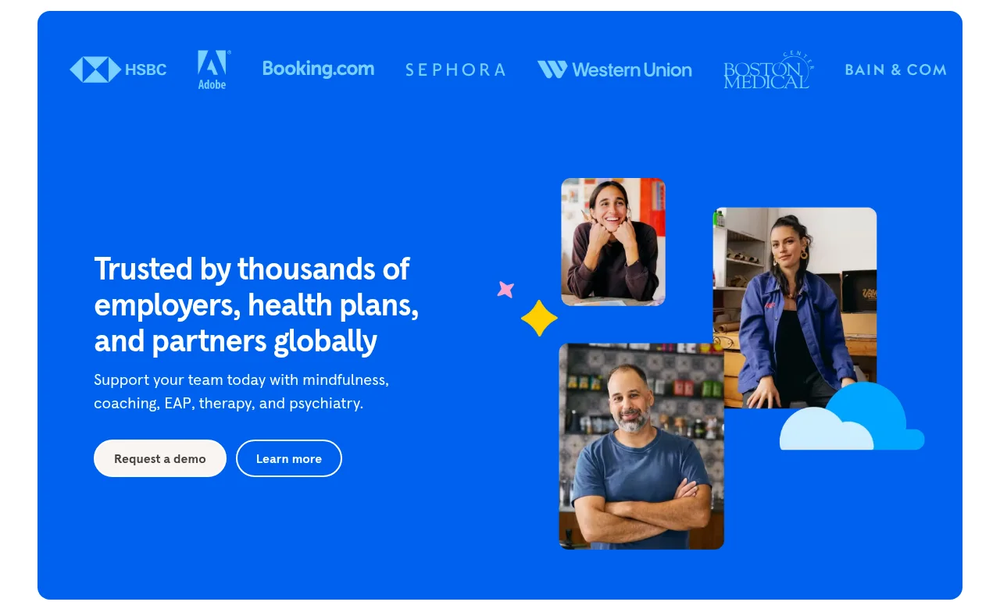
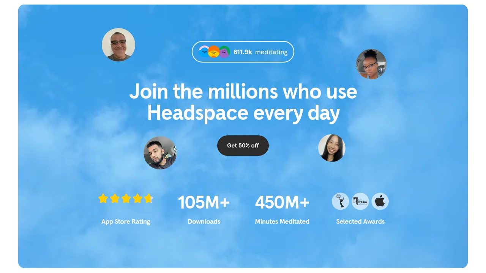
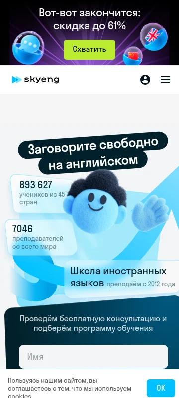

Блок В · Модуль В3
Сайт
Сайт школы похож на хорошего продавца-консультанта в магазине. Человек заходит и думает: «что это? мне подойдёт? сколько стоит? можно попробовать?». Хороший продавец отвечает на вопросы по порядку и в конце предлагает примерить. Сайт делает то же самое, только молча, блоками. Разберём, из каких блоков он состоит, как работает самый первый экран, как сайт перестраивается под телефон и как сделать, чтобы ему верили.
Лендинг как рассказ
Страница сайта это то, что открывается по одному адресу. Сайт может быть из одной страницы (лендинг) или из многих (главная, курсы, цены, блог).
Блок или секция это горизонтальная полоса страницы со своей темой: «о школе», «цены», «отзывы». Страницу собирают из блоков сверху вниз, как бутерброд из слоёв.
Конверсия это доля посетителей, которые сделали нужное действие. Если из 100 зашедших 3 записались на пробный урок, конверсия 3%.
Заявка (по-английски lead, «лид») это оставленный контакт человека, который заинтересовался.
Лендинг (landing page, «посадочная страница») это одна длинная страница с одной целью, например записаться на пробный урок. Её читают сверху вниз, как рассказ. Каждый блок отвечает на следующий вопрос посетителя. Нажми «Показать вопросы» и посмотри, какой блок на какой вопрос отвечает.
Китайский, который хочется учить
Онлайн-уроки для подростков и взрослых. Тоны, иероглифы и живая речь с первого урока.
Записаться на пробный ПрограммаДля кого
HSK к поступлению
для работы и путешествий
и после перерыва
Как проходит урок
Учитель в Zoom, задания на телефоне, домашка в личном кабинете.
Учитель
Фото, опыт, 2–3 факта, видео-приветствие.
Отзывы
Цены
Вопросы
Первый урок бесплатно
Записаться на пробныйКак это в жизни: лендинг как рассказ
Пролистай страницу внутри рамки. Каждый блок отвечает на следующий вопрос посетителя: что это, мне ли это, работает ли, кто ещё пользуется, сколько стоит, а если…

1234567891011- Полоса с акцией над всем.
- Первый экран: обещание + кнопка + картинка.
- «С чем помочь?»: человек сразу выбирает свою проблему.
- Что внутри: вкладки с примерами приложения.
- Отзывы обычных людей.
- Для компаний: логотипы известных брендов.
- Библиотека: карусель с содержимым.
- Цифры: миллионы пользователей, оценки, награды.
- Частые вопросы (FAQ): снимают последние сомнения.
- Финальный призыв: та же кнопка, что наверху, ещё раз.
- Подвал: подписка, ссылки, магазины приложений.
Скриншоты настоящих сайтов, ноябрь 2026. Наведи на пункт или нажми его, и номер на картинке подсветится.
- На странице пять целей сразу: записаться, подписаться, скачать, купить, позвонить.
- Начинать с истории школы, а не с того, что получит человек.
- Кнопка записи только в самом низу.
Мини-тест
Почему кнопка «Записаться» есть и наверху, и в самом низу?
У лендинга одна цель, и действие для неё повторяют там, где человек может быть готов: после первого экрана и после цен и вопросов.
Первый экран
Первый экран (hero) это то, что видно сразу, пока ещё ничего не листала. Как витрина магазина: за пару секунд прохожий решает, заходить или идти мимо. На первом экране должно быть четыре вещи: обещание (что я получу), для кого это, одна главная кнопка и картинка, которая подтверждает слова.
Добро пожаловать в мир китайского языка!
Мы рады видеть вас на нашем сайте
Подробнее О нас КонтактыКитайский с тонами и иероглифами с первого урока
Онлайн-школа для подростков от 12 и взрослых. Группы до 6 человек, кабинет с домашкой.
Записаться на пробный Первый урок бесплатноКак это в жизни: первый экран
 1234
1234 567
567
89- Фото на весь экран передаёт настроение раньше слов: тишина, горы, вода.
- Обещание в 6 слов: «Успокой ум. Измени жизнь».
- Подзаголовок с доказательством: «приложение №1 для сна».
- Главная кнопка «Попробовать бесплатно» и вторая для тех, у кого уже есть аккаунт.
- Короткое крупное обещание по центру.
- Две кнопки: «попробовать» и «заказать показ».
- Сразу видно сам продукт: окно приложения прямо на первом экране.
- Заголовок слева на тёмном фоне, много воздуха.
- Интерфейс продукта вместо картинки: «вот как это выглядит».
Скриншоты настоящих сайтов, ноябрь 2026. Наведи на пункт или нажми его, и номер на картинке подсветится.
Шаг за шагом: проверь свой первый экран
Покажи первый экран человеку на 5 секунд и убери. Спроси: «Что это за сайт? Для кого? Что тут можно сделать?» Если ответил на все три, первый экран работает. Это называется тест пяти секунд.
- Заголовок-лозунг без смысла: «Откройте мир возможностей».
- Фото на весь экран, а текст и кнопка уехали ниже.
- Слайдер из пяти картинок, которые сами листаются: дальше первой никто не смотрит.
Мини-тест
Какой заголовок первого экрана сильнее?
Конкретное обещание с цифрами проверяемо и понятно. «Лучшая» говорят все, ей не верят. Если обещание неправда, его нельзя писать: проверь, что школа может его выполнить.
Как называются блоки
У блоков сайта есть привычные названия, как у частей письма: обращение, основная часть, подпись. Их полезно знать: по ним ищут примеры в галереях сайтов и ставят задачу программисту.
- Шапка (header): полоска на самом верху с логотипом и меню.
- Первый экран (hero): витрина, главное обещание и кнопка.
- Цифры и доверие (social proof): «500 учеников», «8 лет преподаю». Как очередь у кафе: раз люди ходят, наверное, хорошо.
- Выгоды (benefits): 3–6 карточек «что вы получите».
- Как это работает (how it works): шаги 1-2-3, «записались, попробовали, учимся».
- Отзывы (testimonials): слова настоящих учеников, лучше с фото и именем.
- Цены (pricing): что сколько стоит.
- Вопросы и ответы (FAQ): строчки-вопросы, которые раскрываются по нажатию, как гармошка.
- Последний призыв (CTA, call to action): крупный блок в конце, «Запишитесь на пробный урок» с кнопкой.
- Подвал (footer): контакты, соцсети, мелкие ссылки.
Китайский, который хочется учить
Тоны, иероглифы и живая речь.
Записатьсяучеников
оценка
подготовка
Как это в жизни: блоки одной страницы

1234567- Первый экран: персонажи + обещание + две кнопки.
- Полоса языков: сразу видно, что можно учить.
- Блоки-преимущества «картинка + текст», картинка то слева, то справа. Это чередование не даёт заскучать.
- Блок про приложение: телефоны и кнопки магазинов.
- Тёмный блок с платной версией: смена фона говорит «тут другое».
- Финальный призыв «Учи язык с Duolingo» и та же кнопка.
- Зелёный подвал со всеми ссылками.
Скриншоты настоящих сайтов, ноябрь 2026. Наведи на пункт или нажми его, и номер на картинке подсветится.
Адаптив: сайт на телефоне
Ширина экрана меряется в пикселях: телефон примерно 360–430, планшет 768–1024, ноутбук 1280–1440, большой монитор 1920.
Брейкпоинт (breakpoint, «точка перелома») это ширина, на которой раскладка сайта перестраивается. Например, «до 768 одна колонка, после три». Дизайнер рисует макеты для 2–3 таких ширин, а программист пишет, что между ними.
Больше половины людей откроют сайт с телефона. Сайт должен перестраиваться под ширину экрана, как вода принимает форму стакана: на широком компьютере три карточки в ряд, на узком телефоне друг под другом, меню прячется в значок. Такой сайт называют адаптивный (responsive). А ширины, на которых он перестраивается, называют точки перелома (breakpoints). Подвигай ползунок ширины и посмотри.
Китайский, который хочется учить
за 2 недели
12 уроков
ДЗ и слова
до 6 человек
- Телефон 360–430: 1 колонка, поля 16–20.
- Планшет 768–1024: 2 колонки.
- Компьютер 1280–1440: 3–4 колонки, ширина текста ограничена.
Как это в жизни: один сайт, два экрана
 12
12 34
34- На компьютере картинка слева, текст и кнопки справа, в две колонки.
- Кнопки узкие, по ширине текста.
- На телефоне те же блоки встали друг под друга: картинка сверху, текст ниже.
- Кнопки растянулись на всю ширину экрана, под палец.
Скриншоты настоящих сайтов, ноябрь 2026. Наведи на пункт или нажми его, и номер на картинке подсветится.
Шаг за шагом: адаптив в Figma
- Создай два фрейма: F, справа выбери iPhone 16 и Desktop.
- Нарисуй сначала телефон: на нём меньше всего места, и сразу видно, что главное (так и говорят: «сначала мобильный», mobile first).
- Скопируй блоки на компьютерный фрейм и разложи шире: карточки в ряд, картинка рядом с текстом.
- Если блоки сделаны автолейаутом, потяни край фрейма: всё перестроится само, так удобно проверять.
- Рисовать только компьютер, а телефон «программист сам сожмёт».
- Таблица на телефоне, которая не влезает в ширину.
- Меню из восьми пунктов в одну строку на телефоне.
Мини-тест
Таблица тарифов из 3 колонок на телефоне. Как лучше?
На телефоне колонки встают в столбик. Уменьшенная таблица нечитаема, а прокрутка вбок всей страницы считается ошибкой вёрстки.
Текст на сайте
Сайт не читают, как книгу, а пробегают глазами, как газету в метро: заголовки, первые слова, кнопки. Поэтому каждый заголовок должен говорить главное сам по себе, даже если текст под ним никто не прочтёт. А длинный текст разбивают на короткие кусочки.
На пробном уроке учитель узнает ваш уровень и цель, вы попробуете различить четыре тона и напишете первый иероглиф. После урока мы предложим группу или индивидуальные занятия и пришлём доступ в личный кабинет с домашним заданием.
- Заголовок блока говорит выгоду, а не тему: «Слышишь тоны через 2 недели», а не «Наша методика».
- Абзац не длиннее 3–4 строк.
- Списки вместо перечислений через запятую.
Как это в жизни: заголовки, которые продают
 12
12- «Профессии и навыки с ИИ, с которыми берут на работу»: говорит о результате для человека, а не о курсах.
- Бейдж со скидкой рядом с поиском: короткий, с датой.
- «Calm your mind. Change your life.» Два коротких предложения одинакового ритма. Легко запомнить.
Скриншоты настоящих сайтов, ноябрь 2026. Наведи на пункт или нажми его, и номер на картинке подсветится.
- Абзацы по 10 строк без подзаголовков.
- Заголовки-загадки, которые понятны, только если прочитать текст.
- Канцелярит: «осуществляем обучение», вместо «учим».
Мини-тест
Какой заголовок блока лучше работает при быстром просмотре?
Человек сканирует заголовки. Заголовок-выгода сразу говорит, зачем читать блок.
Фото и иллюстрации
Картинки решают, поверят ли школе. Как с врачом: фото настоящего кабинета и самого врача вызывает больше доверия, чем красивая картинка из интернета. Самое сильное это настоящие фото: ты, урок, кабинет ученика на экране телефона. Стоковые фото «улыбающихся студентов в наушниках» видели все, и они сразу говорят «тут всё ненастоящее».
Сток: девушка в наушниках улыбается ноутбуку; китайский фонарик; иероглифы шрифтом с «кистью»; три иллюстрации из разных наборов.
Учитель за своим столом в естественном свете; скриншот настоящего кабинета на телефоне; иероглиф урока крупно; одна серия фото в одном цвете и свете.
- Стоковые фото «улыбающиеся люди в наушниках»: их видели на сотне сайтов.
- Фото разного стиля и цвета на одной странице.
- Огромные тяжёлые файлы, и сайт на телефоне грузится полминуты.
Мини-тест
Что лучше всего в блок «Как проходит урок»?
Показать, а не рассказать: скриншот реального урока сразу отвечает на вопрос «как это будет».
Доверие и заявка
Главная цель сайта школы это заявка на пробный урок. Чтобы человек её оставил, должно быть три вещи, как при покупке в незнакомом магазине: понятно (что и сколько стоит), не страшно (можно вернуть, есть отзывы) и легко (купить в два нажатия).
- Понятно: цены на сайте, а не «узнайте у менеджера». Скрытая цена отталкивает больше, чем высокая.
- Не страшно: бесплатный пробный, «можно перенести урок», отзывы с именами и фото, лицо учителя.
- Легко: форма из 2–3 полей (имя, телефон или мессенджер, удобное время). Каждое лишнее поле теряет часть заявок.
Форма: ФИО, e-mail, телефон, возраст, город, уровень, цель, откуда узнали, комментарий. Кнопка «Отправить».
Форма: имя, телефон или Telegram. Кнопка «Записаться на пробный». Под ней: «Перезвоним в течение дня, урок бесплатный».
Как это в жизни: доверие

123
456
7- Логотипы известных компаний, которые пользуются сервисом.
- Заголовок с масштабом: «тысячи компаний по всему миру».
- Фото живых людей, а не стоковые улыбки.
- «Присоединяйся к миллионам»: чувство, что все уже там.
- Живой счётчик «611,9 тысяч медитируют сейчас».
- Цифры: рейтинг в App Store, 105 миллионов скачиваний, награды.
- Цифры прямо в первом экране: 893 627 учеников, 7046 преподавателей.
Скриншоты настоящих сайтов, ноябрь 2026. Наведи на пункт или нажми его, и номер на картинке подсветится.
- Отзывы без имени и фото, похожие на выдуманные.
- Цены спрятаны: «узнайте стоимость по телефону».
- Форма заявки на десять полей.
Мини-тест
Что сильнее снижает доверие?
Скрытая цена читается как «дорого и будут уговаривать». Открытая цена, даже высокая, честнее.
Как делают сайт: этапы и инструменты
Чем собирают
- Tilda: российский конструктор сайтов, как набор готовых блоков-кубиков. Просто, размещается в России. Но когда захочешь что-то необычное, быстро упрёшься в его рамки.
- Framer: рисуешь почти как в Figma, и это сразу работающий сайт с красивыми анимациями. Минус: сервера за рубежом.
- Webflow: очень гибкий, но сложный, как профессиональная кухня. Тоже за рубежом.
- Код (HTML, CSS, JS, то есть сайт пишется текстом-программой): полная свобода, можно разместить у российского хостинга (Selectel, Yandex Cloud). Так сделан и этот курс, его пишу я.
Мини-тест
Что делают раньше: тексты или дизайн блоков?
Дизайн под реальные слова не ломается, когда приходит длинный заголовок или три абзаца вместо одного.
Как сайт попадает в интернет
Нарисовать сайт в Figma это как нарисовать план магазина. Чтобы в магазин могли прийти покупатели, нужно ещё построить его, снять помещение, повесить вывеску с адресом и открыть двери. Программисты и хозяева сайтов говорят об этом своими словами. Разберём их по одной картинке: сайт как магазин.
Кто строит магазин
- Фронтенд (frontend): торговый зал, всё, что видит покупатель: витрины, кнопки, анимации. Пишется на трёх языках из модуля «Анимации»: HTML (скелет), CSS (внешность), JavaScript (поведение). Превратить картинку из Figma в такую страницу называется вёрстка.
- Бэкенд (backend): склад и бухгалтерия за дверью «только для персонала». Хранит учеников и оплаты в базе данных (как классный журнал), проверяет пароли, отправляет письма.
- API: окошко выдачи между залом и складом. Зал просит «дай расписание Маши» по заранее оговорённому бланку, склад отвечает.
- Статический сайт (static site): магазин без склада, где весь товар уже на полках. Быстро, дёшево, надёжно. Этот курс именно такой.
- Фреймворк и библиотека (framework, library): фреймворк это готовый каркас здания с правилами (React, Vue, Astro), библиотека это набор готовых инструментов для одной задачи (анимации, графики, 3D).
Как хранят и чинят
- Репозиторий (repository): папка сайта, которая помнит все свои версии, как альбом, где можно вернуться к любой старой фотографии. Хранят их на GitHub. Коммит (commit) это одна запись в этом альбоме: «поменяла цвет кнопки».
- Баг (bug, «жучок»): ошибка, когда что-то работает не так. «Пофиксить» значит исправить.
- Кэш (cache): браузер запоминает сайт, чтобы второй раз открыть быстрее. Иногда из-за этого видишь старую версию. Помогает обновить страницу с зажатым Shift.
- DevTools: «рентген» сайта в браузере, открывается клавишей F12. Можно навести на любую кнопку и увидеть её шрифт, размер, отступы. Отличный тренажёр для глаза.
Как магазин находят и как он работает
- SEO (search engine optimization): чтобы магазин был в справочнике и его находили в Яндексе. Помогают понятные заголовки, полезные тексты, скорость.
- Метатеги (meta tags): невидимая табличка для поисковика и браузера: название во вкладке и короткое описание.
- Превью ссылки (OG-картинка, open graph): открытка, которая появляется, когда ссылку присылают в Telegram: картинка, заголовок, строчка текста.
- Фавикон (favicon): крошечный значок сайта на вкладке браузера, как значок на двери.
- Якорная ссылка (anchor link): ссылка, которая переносит не на другую страницу, а к нужному месту этой же, как закладка в книге. Пункты в боковом меню этого курса такие.
- Аналитика (analytics): счётчик посетителей, как кликер у входа. В России для школы берут Яндекс Метрику.
- Конверсия (conversion): сколько из зашедших купили. Зашли 100, записались на пробный 3: конверсия 3%.
- Скорость загрузки: как быстро открывается дверь. Проверяют бесплатным сервисом PageSpeed Insights.
- Кроссбраузерность (cross-browser): магазин одинаково удобен для всех, кто приходит: из Chrome, Safari, Яндекс Браузера, с айфона и андроида.
- Персональные данные: имя и телефон из формы заявки. По российскому закону (152-ФЗ) их хранят на серверах в России, а на сайте есть «политика обработки» и галочка согласия.
Как это в жизни: вывеска, замок и значок
 12
12- Полоса-объявление о новости компании. Её показывает фронтенд, а текст берётся с бэкенда, поэтому его меняют без программиста.
- Окно чата «5 менеджеров на связи»: это подключённый сервис (по API).
Скриншоты настоящих сайтов, ноябрь 2026. Наведи на пункт или нажми его, и номер на картинке подсветится.
Мини-тест
Ты купила адрес aikitay.ru. Что это?
Домен это адрес на вывеске. Хостинг это помещение, где лежат файлы.
Программист всё исправил, а ты видишь старую версию сайта. Что сделать сначала?
Браузер помнит старую копию. Обновление с Shift загружает свежую.
Зашли 200 человек, оставили заявку 6. Конверсия…
6 из 200 это 3 из 100, то есть 3%.
Практика: структура сайта AIKITAY
Где смотреть сайты: Land-book, Lapa Ninja, Awwwards (вау-сайты, для вдохновения, не для копирования), Godly. Каталог стилей курса: каталог стилей.
Словарик модуля
Все слова этого модуля в одном месте. Пробегись глазами: если слово понятно и можешь объяснить его своими словами, нажми «Знаю». Галочка «показать только незнакомые» спрячет выученные, так удобно повторять. Итоговый тест по всем словам курса в конце курса.